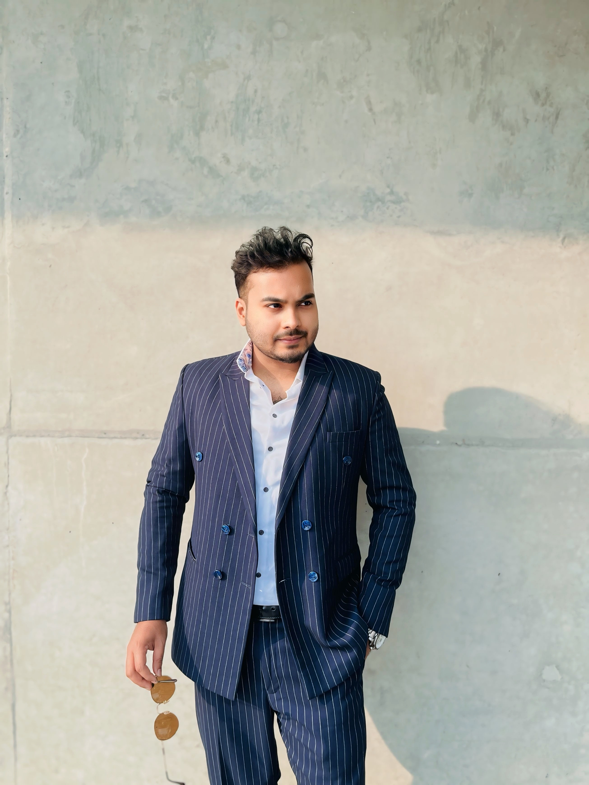

Computer Science · Dhaka, Bangladesh
Computer science student at Independent University Bangladesh, routing between programming, networking and cybersecurity — building small systems that sense, connect and respond.

// four nodes this CV routes through
Computer science student at Independent University Bangladesh (IUB) with expertise in Python, Java, and cybersecurity principles. Actively engaged in tech festivals and competitions, demonstrating strong teamwork and problem-solving skills. Prepared to leverage academic training in practical software development environments.
Open to internships and entry-level roles across networking, cybersecurity, and software development.